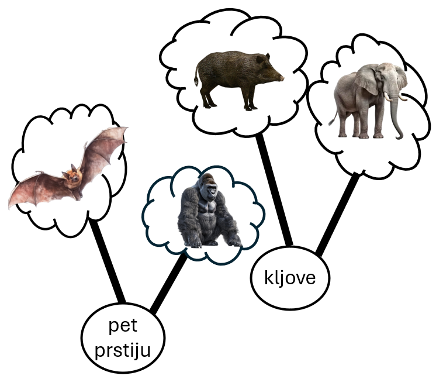
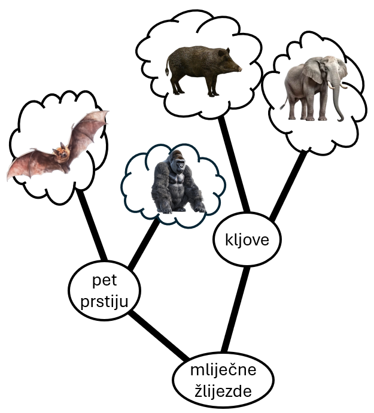
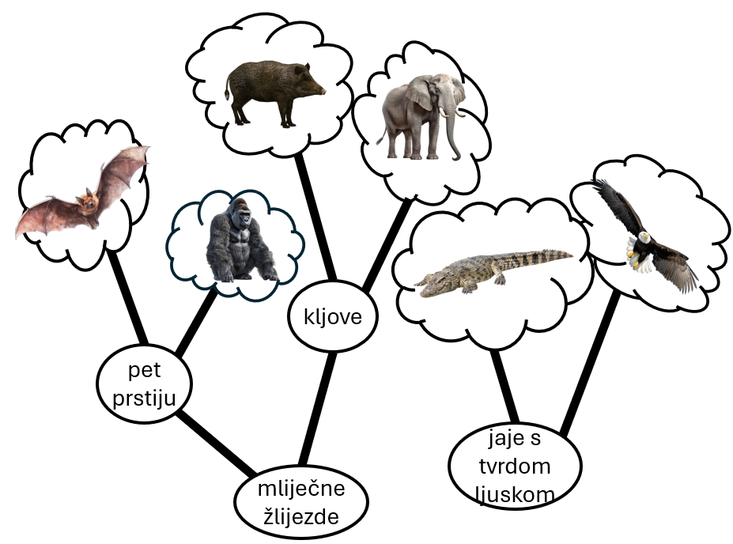
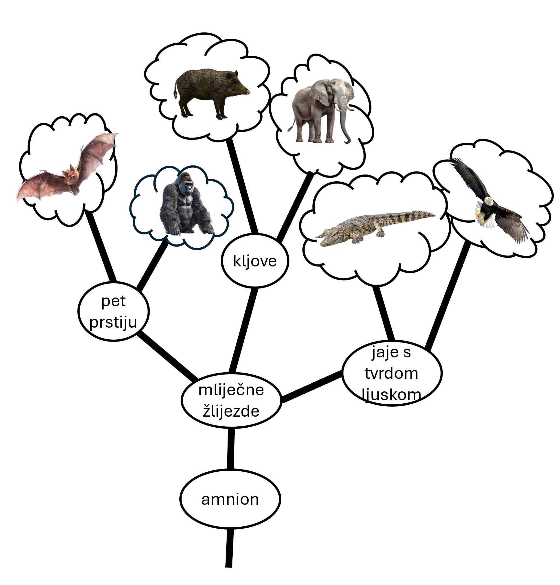
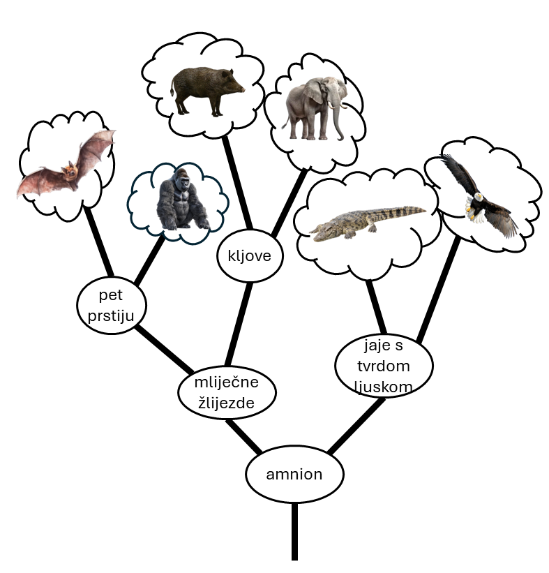

Izrada filogenetskog stabla na temelju morfologije
Čovjeka je oduvijek zanimalo u kakvom srodstvu se nalaze različite vrste životinja, biljaka i drugih u odnosu jedna na drugu. Danas je već općepoznato da su svi organizmi na Zemlji neraskidivo povezani jer potječu od istog pretka. Međutim, i prije nego što su znanstvenici bili sigurni u to primijećene su neke sličnosti među organizamima koje su se više isticale nego njihove razlike – na primjer, svima je na prvi pogled jasno da pčela i pauk imaju više toga zajedničkog nego pčela i pas. Ali što je s psom i mačkom? A s psom i vukom, ili pčelom i osom? Što ako usporedimo životinje i biljke, ili životinje i bakterije? Što ako usporedimo životinje koje su izumrle i one koje danas žive – kao što su ptice i dinosauri? Pokušavajući odgovoriti na ovakva i slična pitanja uspjeli smo bolje razumjeti kako su živa bića dobila osobine po kojima ih danas poznajemo, kao što je perje kod ptica ili osam nogu kod paukova.
Prvi pokušaji izrade „obiteljskog” stabla organizama bili su na temelju morfologije. Morfologija obuhvaća vidljive osobine živog bića kao što je broj očiju ili nogu, ima li krila ili peraje i slično. Neka osobina ne mora biti prisutna kroz cijeli život organizma, ali bitno je da je postojala u nekom životnom periodu kao što je na primjer kukuljica kod leptira ili rep kod punoglavca, koji su prisutni samo na početku života: znamo da odrasli leptiri ne stvaraju kukuljice, a žabe nemaju rep.
Kako bi odredili srodstvo organizama na temelju morfologije prvo moramo napraviti tablicu svojstava. Tablica svojstava je tablica u kojoj se u redcima nalaze organizmi, a u stupcima morfološke osobine dok se u ćelijama (poljima) nalazi oznaka ima li organizam neko svojstvo ili nema (DA ili NE).
U sljedećem primjeru želimo odrediti “obiteljsko” stablo šišmiša, gorile, divlje svinje, slona, krokodila i orla na temelju izabranih morfoloških osobina, a to su amnion, jaje s tvrdom ljuskom, mliječne žlijezde, pet prstiju i kljove. Sve životinje čine listove našeg stabla, a morfološke osobine čine čvorove iz kojih izlaze grane.
| životinja | amnion | jaje s tvrdom ljuskom | mliječne žlijezde | pet prstiju | kljove |
|---|---|---|---|---|---|
| šišmiš | DA | NE | DA | DA | NE |
| gorila | DA | NE | DA | DA | NE |
| divlja svinja | DA | NE | DA | NE | DA |
| slon | DA | NE | DA | NE | DA |
| krokodil | DA | DA | NE | NE | NE |
| orao | DA | DA | NE | NE | NE |
Na temelju ovakve tablice crta se filogenetsko stablo koje poput obiteljskog stabla prikazuje srodstvene odnose između, u ovom slučaju, životinja i iz kojega jasno možemo očitati tko je kome bliski rođak, kao i iz obiteljskog stabla. No odakle krenuti?
Pogledajmo kakav raspored osobina imamo u ovoj tablici, koliko DA, a koliko NE za pojedine osobine. Uočit ćemo da je šišmišu, gorili, divljoj svinji i slonu zajedničko da imaju mliječne žlijezde što ima smisla, pošto se radi o sisavcima. Međutim, postoje i razlike među ovim životinjama. Tako šišmiš i gorila imaju pet prstiju, a nemaju kljove dok divlja svinja i slon imaju kljove, ali nemaju pet prstiju. Zbog njihovih sličnosti i razlika ovu skupinu sisavaca, zahvaljujući tablici svojstava 1, možemo podijeliti u dvije podskupine 1 pri čemu jednu podskupinu čine gorila i šišmiš, a drugu podskupinu divlja svinja i slon.

Sada znamo da su gorila i šišmiš u bliskom srodstvu jer imaju DA u istim stupcima tablice, odnosno sve osobine u našoj tablici koja ima gorila, ima i šišmiš. Na isti taj način spojili smo divlju svinju i slona, koji su rođaci po kljovama.
Kao što smo spomenuli, iako se razlikuju u dva svojstva - broj prstiju i kljove - obje podskupine na Slici 1. pripadaju sisavcima jer svi imaju mliječne žlijezde. Svaki od ova dva para nalazi se na zasebnoj grani filogenetskog stabla, ali još uvijek se spajaju u toj osobini što je pokazano na Slici 2.

Dolazimo do težeg dijela. Krokodil i orao nemaju niti kljove, niti pet prstiju, niti mliječne žlijezde - oni su sasvim različita skupina živih bića u odnosu na dosad spomenute sisavce. Kamo ćemo njih smjestiti? Prije svega, znamo da su oni jedan drugome svakako najbliskiji rođaci u tablici jer jedini od naših životinja imaju svojstvo jajeta s tvrdom ljuskom. Stoga ćemo ih povezati u par na isti način kao šišmiša i gorilu te divlju svinju i slona na Slici 1.

Ali što dalje? Ovdje moramo biti pažljivi da povežemo naše podskupine na pravo mjesto. Imamo dva izbora, možemo ih povezati prema mliječnim žlijezdama ili prema amnionu. Ako ih povežemo prema mliječnim žlijezdama dobit ćemo stablo na Slici 4. , ali to stablo je pogrešno! Spajanje osobine “jaje s tvrdom ljuskom” sa osobinom “mliječne žlijezde” pogrešno nam govori da i krokodil i orao imaju mliječne žlijezde i doje svoju mladunčad. Svi znamo da to nije tako, stoga je nužno da “jaje s tvrdom ljuskom” spojimo sa prvom sljedećom osobinom koje imaju i krokodil i orao.

Vidimo da sve životinje iz tablice imaju amnion - svojevrsnu vrećicu ili balon koja obavija mladunče i pruža mu zaštitu sve do trenutka kad dođe na svijet. Neovisno o tome raste li mladunče u majčinoj utrobi kao kod sisavaca ili u jajetu kao kod ptica i gmazova, uvijek je obavijeno amnionom. Upravo jer je amnion zajednička osobina svim našim životinjama trebamo ih povezati na njegovoj razini kao što je učinjeno na Slici 5. Ako pogledamo Sliku 5. vidimo da iznad amniona se nalaze grane i listovi pa to možemo interpretirati kao krošnju našeg stabla dok se ispod amniona ne nalazi ništa pa taj dio možemo interpretirati deblom našeg stabla, a na dnu debla nalazi se korijen. Zbog ovakve interpretacije takvu osobinu koju svi imaju, kao što amnion imaju sve životinje iz našeg primjera, nazivamo korjenom stabla.

Ovako (Slika 5.) izgleda točno filogenetsko stablo za tablicu u našem primjeru. Ako pratimo svojstva iz korijena prema prikazima životinja, vidjet ćemo koja točno svojstva ima koja životinja. Na primjer, prema filogenetskom prikazu vidjet ćemo da slon ima amnion, zatim mliječne žlijezde, te na kraju kljove. To je sve točno, i u tablici u svakom od tih stupaca stoji DA. Isto tako vrijedi i za ostale životinje iz tablice, a stablo koje smo na ovaj način dobili omogućuje nam da intuitivno shvatimo i uvidimo da su orao i krokodil bliži rođaci nego orao i šišmiš - usprkos tome što oboje imaju krila. Ovakva filogenetska stabla znanstvenicima pomažu da razjasne mnoga pitanja o nastanku života na Zemlji.
Na kraju nam ostaje da objasnimo zašto neku osobinu ima više životinja, a neku manje. To ovisi o starosti osobine. Što više organizama posjeduje neku osobinu, to je ta osobina starija što znači da ju imaju i bliski i daleki srodnici. To jest, u nekom je davnom trenutku to svojstvo nastalo, i onda su ga svi potomci naslijedili. Uzmimo za primjer rep: recimo da je neka životinja prije mnogo milijuna godina imala rep, i sve njoj srodne životinje koje su nakon nje nastale također su imale rep. To su danas i ptice, i sisavci, i gmazovi – pošto ima toliko puno različitih životinja koje danas imaju rep, znamo da se on morao pojaviti jako davno. Da bi nastale različite skupine životinja potrebno je puno vremena, a njihova zajednička karakteristika – rep – govori nam da su nekoć jako, jako davno ipak bile slične, dapače, da potječu od istog repatog pretka. Kroz mnogo milijuna godina pojavile su se među njima mnoge razlike, ali rep je ostao.
S druge strane, ako neku osobinu posjeduje mali broj organizama, ta je osobina mlađa što znači da ju imaju bliski srodnici, a u daljih srodnika ne postoji pošto su oni živjeli prije nego li je ta osobina uopće postojala. Kao primjer uzmimo sisavce, koji rađaju žive mlade. Rađanje živih mladih prisutno je kod svih sisavaca, koji su bliski srodnici, ali ptice, gmazovi, vodozemci i ribe, koji su svi u dalekom srodstvu sa sisavcima, nemaju tu sposobnost, već umjesto toga nesu jaja! Usprkos tome, oni su svi u srodstvu, ali neki od njih su bliskiji rođaci od drugih.